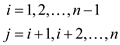
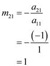
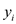
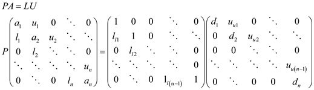
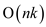

a.
Decomposition of  : The Decomposition
of
means to decompose a matrix into a
product of lower triangular matrix and upper triangular matrix.
: The Decomposition
of
means to decompose a matrix into a
product of lower triangular matrix and upper triangular matrix.
In Decomposition
of
the input is matrix and output
is upper triangular matrix obtain by applying following row
operation on .
Here,

and
And lower triangular matrix is given by
 …… (1)
…… (1)
Consider a matrix,
Initially calculate the value of all entries other than 0 and 1 of equation (1).
Apply the row operation to the matrix A to find the upper triangular matrix U
Calculate the value of ,
 …… (2)
Calculate the value of ,
…… (3)
Calculate the value of,
…… (4)
Calculate the value of ,
…… (5)
Apply row transformation to find upper triangular matrix.
Similarly calculate the value of,
…… (6)
Calculate the value of,
…… (7)
…… (8)
Apply row transformation to find upper triangular matrix.
Calculate the value of,
…… (9)
Calculate the value of,
 …… (10)
…… (10)
Apply row transformation to find upper triangular matrix.
Calculate the value of,
…… (11)
Apply row transformation to find upper triangular matrix.
Thus the upper triangular matrix is,
Substitute the value of equation (2), (3), (4), (5), (6), (7), (8), (9), (10) and (11) in equation (1).
Hence, the value of lower triangular matrix
Hence, the Decomposition
of
is
 .
.
b.
Consider an expression,
To solve this, the following steps are followed:
• Express in its
decomposition
form.
•
• Use backward substation to evaluate .
.
Express in
terms of LU decomposition (
):
This can be solved by using forward and backward substitution steps.
Forward Substitution:
Let
This is the forward substitution step in which we substitute
in
as.
Since, values of  is
substituted to find the next value of , hence,
this step is forward substitution step.
, hence,
this step is forward substitution step.
Putting the above in
Solve for:
…… (12)
…… (13)
…… (14)
…… (15)
…… (16)
Backward Substitution:
In this step, the value of found in
previous step is used to compute the value of. This time
we work backward from  to
to , and, hence
this step is called as backward substitution step.
, and, hence
this step is called as backward substitution step.
Find from
Solve for
…… (17)
…… (18)
…… (19)
…… (20)
…… (21)
Hence, the solution of the systemobtain by forward substitution and backward substitution method is.
Inverse of matrix is a matrix
such
that, where
 is
an identity matrix.
is
an identity matrix.
LU decomposition helps to solve problems of the form. This can
be utilized to find inverse of matrix by setting
up five sub-problems where each sub-problem corresponds to one
column of the inverse matrix.
Solving for column1:
• Forward Substitution
Let
Solve for :
• Backward Substitution
Find from
Solve for
• Forward Substitution

Let
Solve for:

• Backward Substitution
Find from
Solve for

Solving for column3:
• Forward Substitution
Let
Solve for:
• Backward Substitution
Find from
Solve for
Solving for column4:
• Forward Substitution
Let
Solve for:
• Backward Substitution
Find from
Solve for
Solving for column5:
• Forward Substitution
Let
Solve for:
• Backward Substitution
Find from
Solve for
Inverse of the matrix can be formed by using the five results which comprises the columns of the inverse matrix.
 .
.
d.
Let the  matrix.
matrix.
• A is positive definite matrix (All eigenvalues are positive)
• Symmetric matrix 
• Tri-diagonal matrix
So, the matrix is of the following form:
This matrix being symmetric positive-definite, it is non-singular and hence, divide by 0 situation doesn’t arise and LU decomposition can be carried out without the need for pivoting.
Let for any  vector
vector ,
the equation to be solved is . This is
done by following steps:
,
the equation to be solved is . This is
done by following steps:
• LU Decomposition
• Forward Substitution
• Backward Substitution
LU Decomposition: The matrix is
decomposed into unit lower triangular and upper triangular matrix,
 and
and . The
decomposition looks like the following:
. The
decomposition looks like the following:
Initially,
Then for:
|
For |
#operations per step |
#operations for n steps |
|
|
Step 1 |
1 multiplication |
|
|
|
Step 2 |
1 multiplication 1 addition |
|
|
|
Step 3 |
• Total number of operations = 2
multiplications and
additions
Forward Substitution:
After the decomposition,
So,
This is the forward substitution step in which is substituted in as.
Then for:
|
For |
#operations per step |
#operations for |
|
1 multiplication 1 addition |
|
• Total number of operations =
multiplications and
additions
Backward Substitution: In this step, the value of
found in
previous step is used to compute the value of.
Find from
Solve for by using the
following method:
Then for:
|
For |
#operations per step |
#operations for |
|
2 multiplications 1 addition |
2
|
• Total number of operations = 2
multiplications and
additions
Total number of operations = multiplications and additions
= multiplications and additions.
Hence, the time complexity of LU decomposition algorithm in
this case will be 
A system of equations can also be solved by using methods that
require matrix inversion. Methods that require matrix inversion
take approximately n! operations. This is asymptotically much
higher than using LU decomposition to solve a system of equation.
In fact, finding out inverse of a matrix is itself faster to
compute by LU decomposition than other methods. This is because, LU
decomposition takes  time.
But once, it has been calculated, two triangular matrices are
obtained. Matrix calculations using triangular matrices is in
general much faster and easier. Infact, calculating inverse of a
matrix can be done with an additional
time.
But once, it has been calculated, two triangular matrices are
obtained. Matrix calculations using triangular matrices is in
general much faster and easier. Infact, calculating inverse of a
matrix can be done with an additional  time
once the decomposition has been done into triangular matrices.
time
once the decomposition has been done into triangular matrices.
Hence, any method based on forming is asymptotically more expensive in the worst case than LU decomposition method for solving equations.
e.
Let the matrix
be.
• A is non-singular, hence, divide by 0 situation doesn’t arise and pivoting is not required. But for the sake of analysis time complexity by LUP decomposition has be calculated.
• Tri-diagonal matrix
So, the matrix is of the following form:
Let for any vector,
the equation to be solved is. This is
done by following steps:
• LUP Decomposition
• Forward Substitution
• Backward Substitution
Forward and Backward substitution take the same amount of
operations as in the previous case. The only different case is the
decomposition step. In this case, the decomposition is done into
unit lower triangular and upper triangular matrix, and. The
pivoting is done by the swapping rows such that the highest element
of a column comes to the diagonal place. The decomposition looks
like the following:

Here, loses the
tri-diagonal property of matrix but it is
still a banded matrix. The essence to solve this is similar to the
tri-diagonal case. The time complexity now depends on the width of
the band or the distance between the farthest diagonals of the
resultant matrix. Matrix becomes
wider than the upper triangle of the initial matrix. The final
complexity becomes 
Hence the time complexity of LUP decomposition algorithm will
be .